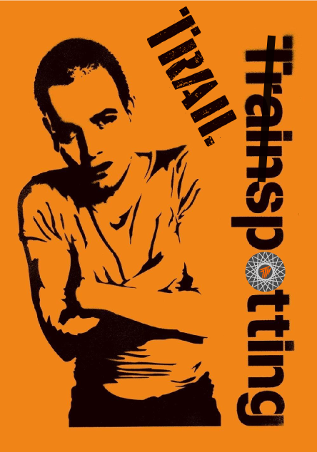

Choose your
route..
Choose your
pace..
Catch your
train..
..too late!?
..well, bollocks.
Trail(n)spotting - das heißt:
kombiniere deine MTB-Fahrt im Inntal mit
den Öffis und hol' dir so (auf angenehme
Weise - vor allem in der kalten Jahreszeit;)
viele, viele Trail-Km heraus!
Züge Variante (A)
------------------------------------
IVB J/M Bus
------------------------------------
Innsbruck ?
Igls ?
------------------------------------
🚴♂️↑358 m→15,0km ca. 90'
------------------------------------
ÖBB-Bhf. REX
------------------------------------
Hall 09:29
Schwaz 09:40 (11')
------------------------------------
🚴♂️↑1064m→25,1km max. 148' max. 208'
------------------------------------
ÖBB-Bhf. S4-Telfs/Pf. S5-Ötztal
------------------------------------
Terfens/W. 12:08 12:38
Innsbruck 11:25 (17') 12:55 (17')
------------------------------------
Züge Variante (B)
IVB J Bus
------------------------------------
Innsbruck ?
Igls ?
------------------------------------
🚴♂️↑358m→15,0km ca. 90'
------------------------------------
ÖBB-Bhf. S4-Kufstein
------------------------------------
Hall 09:45
Münster/W. 10:12 (27')
------------------------------------
🚴♂️↑513m→17,1km max. 90' max. 114'
------------------------------------
ÖBB-Bhf. S4-Telfs/Pf. REX-Land.
------------------------------------
Brixlegg 11:42 12:06
Schwaz 11:58 (16') 12:19 (13')
------------------------------------
🚴♂️↑1064m→25,1km max. 160' max. 169'
------------------------------------
ÖBB-Bhf. S4-Telfs/Pf. S5-Ötztal
------------------------------------
Terfens/W. 14:38 15:08
Innsbruck 14:55 (17') 15:25 (17')
------------------------------------
Züge Variante (C)
IVB J Bus
------------------------------------
Innsbruck ?
Igls ?
------------------------------------
🚴♂️↑358m→15,0km ca. 90'
------------------------------------
ÖBB-Bhf. Bus 3,6,7
------------------------------------
Hall 10:20
Walderbrücke 10:35 (15')
------------------------------------
🚴♂️↑490m→15,9km max. 89' max. 100'
------------------------------------
ÖBB-Bhf. S5-Steinach S4-Telfs/Pf.
------------------------------------
Hall 12:04 12:15
Innsbruck 12:13 (9') 12:25 (10')
------------------------------------
Züge Variante (D/DD)
ÖBB-Bhf. S6
------------------------------------
Innsbruck 11:08
Reith 11:39 (31')
------------------------------------
🚴♂️↑730m→24km ca. 130'
------------------------------------
ÖBB-Bhf. S5
------------------------------------
Völs 13:53
Innsbruck 14:01 (8')
------------------------------------